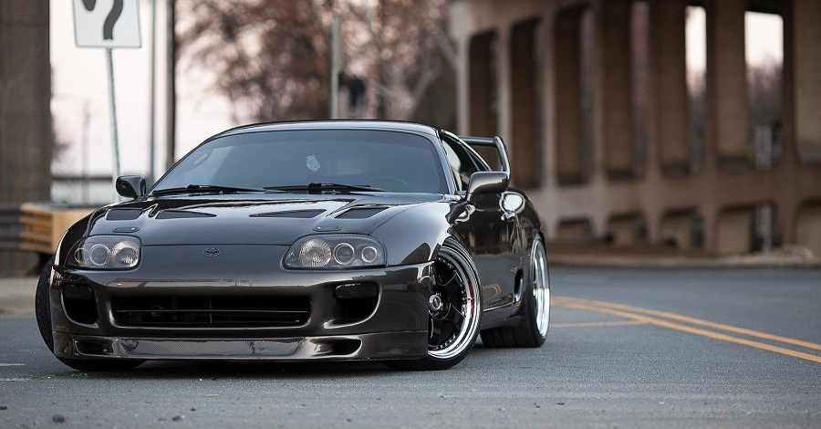
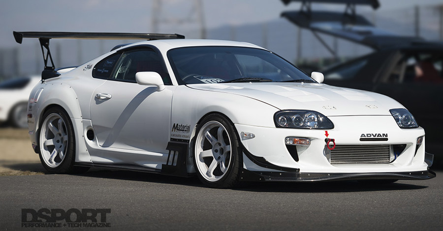

A Toyota Supra a japán Toyota autógyár orrmotoros, hátsókerék-hajtású sportautó modellje. 1978-tól több generáció készült. 2019-től a Toyota az egykori Supra modellen alapuló új Toyota GR Supra modellt hoz forgalomba. [1]
Az új Suprával a Toyota nagy lépést tett előre afelé, hogy egy nagy teljesítményű, komoly sportautót hozzon létre. Az autó a felfüggesztés és a hajtáslánc egyes elemeit a Z30-as Soarertől (Lexus SC) kapta, az előző generációnak szintén voltak közös vonásai az akkori Soarerrel. A tesztgyártás 1992 decemberében indult be, ekkor 20 negyedik generációs Supra hagyta le a gyártósort. A hivatalos sorozatgyártás 1993 áprilisában indult be. A kocsi korábbiakhoz képest teljesen új dizájnt kapott, gömbölyded karosszériaelemekkel, melyek modern hatást keltettek, ugyanakkor emlékeztettek a Toyota egyik klasszikus sportautójára, a 2000GT-re. A motorválaszték is felfrissült, a japán piacon az autóhoz kapható volt egy 2997 cm³-es 2JZ-GE szívómotor, mely 220 lóerős (164 kW) teljesítmény leadására volt képes 5600-as fordulatszámon, és 280 Nm-es nyomatékra 4800-as fordulaton és egy ugyancsak 2997 cm³-es duplaturbós 2JZ-GTE motor 276 lóerővel (206 kW) és 431 Nm-es nyomatékkal. Az exportra, Amerikába és Európába szánt turbós modellek a turbómotor egy erősebb változatát kapták meg, melyben többek között kisebb, acél szélkerekes turbófeltöltők és nagyobb injektorok voltak. Az autó így 320 lóerős (239 kW) teljesítményre és 427 Nm-es nyomatékra volt képes 5600-as, illetve 4000-es fordulatszámon. Ez a változat 4,2 másodperc alatt gyorsult nulláról hatvan mérföld per órás sebességre és 13,1 másodperc alatt tett meg negyed mérföldet (402 m), ami alatt 175 km/h-s sebességre gyorsult. A turbófeltöltős verzió mindenféle átalakítás nélkül 285 km/h-ra tudott gyorsulni, de a végsebessége Japánban elektronikusan le volt korlátozva 180 km/h-ra, a világ többi részén pedig 250-re. Az Európába exportált modellek motorháztetején volt egy plusz légbeömlő nyílás. A szívómotors autók légellenállási együtthatója .31 volt, míg a turbósoké .32, ezeket az értékeket a hátsó spoilerek nélkül mérték. A két turbó szekvenciális és nem párhuzamos elrendezésben dolgozott, tehát alacsonyabb fordulaton az összes kipufogógáz az egyes számú feltöltőn ment keresztül. Ez a turbólyuk csökkentése miatt volt fontos. Ennek a megoldásnak köszönhetően már 1800-as fordulatszámon 410 Nm-es nyomatékot adott le a motor, 3500-as fordulatnál a kipufogógáz kisebb része már a második turbóba került, de csak 4000-es fordulaton kezdett teljes erővel működni a második feltöltő. A szekvenciális elrendezésnek köszönhetően alacsony fordulatszámon is van töltőnyomás és gyorsabban reagál az autó a gázadásra, tehát kisebb a turbólyuk és magasabb fordulaton még nagyobb a töltés. A gyors fordulatszám-emelkedés a turbók mellett az ACIS (Acoustic Control Induction System) nevű rendszernek is köszönhető volt, mely a harmadik generációs Suprákban is megtalálható volt, és ami szabályozni tudta a szívócsőben uralkodó nyomást a teljesítmény növelése érdekében. A turbós modellekhez egy a Getrag és a Toyota által közösen kifejlesztett hatsebességes manuális sebességváltó (V160) járt, míg a szívómotorosokba a korábbi generációkból már ismert W58 ötsebességes manuális váltó felújított változata került. Mindkét modellhez rendelhető volt egy négysebességes automata váltó (Toyota A340E) is, kapcsolható manuális móddal. A turbós autókat nagyobb fékekkel és kerekekkel szerelték, mint a szívómotoros verziókat. Mindkét modellhez ötküllős alumínium felnik jártak, az előző generációval ellentétben a kisebb súly miatt ezekhez az autókhoz mankókereket adtak teljes értékű pótkerék helyett. A Toyota minden lehetséges módon megpróbálta csökkenteni a negyedik generációs Supra súlyát az elődhöz képest. Alumíniumból készült a motorháztető, a zárhíd, a motor és a sebességváltó olajteknője, a felfüggesztés felső lengőkarjai és a targatetős változatoknál a tető. Emellett üreges szálú anyagból készült a padlóborítás, magnézium ötvözetből a kormánykerék, műanyagból az üzemanyagtank és a tanksapka és egyetlen kipufogócső került az autóra. Bár az új Suprába dupla légzsák, kipörgésgátló, nagyobb fékek, nagyobb felnik, nagyobb gumiabroncsok és egy plusz turbó is került, mégis 91 kg-mal könnyebb volt, mint elődje. A manuális váltós alapmodell 1460 kg-ot nyomot, az extraként rendelhető targatető plusz 18 kg-ot jelentett, míg az automata váltó 25 kg-mal tette nehezebbé az autót. A kocsi első-hátsó súlyeloszlási aránya 51:49 volt. Az ikerturbós Supra nehezebb volt, mint a sportosabb Chevrolet Corvette és Nissan 300ZX, de kevesebbet nyomott az összkerékhajtásos Mitsubishi 3000GT VR4-nél.
